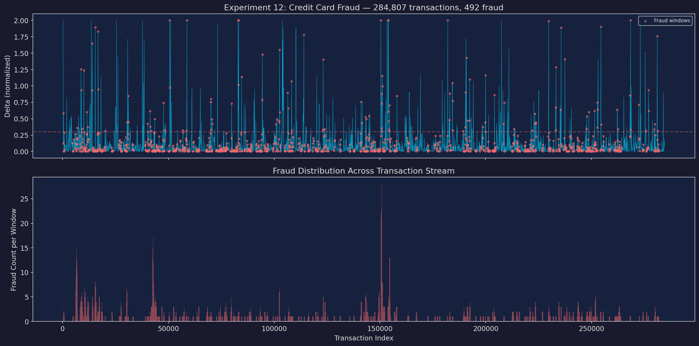
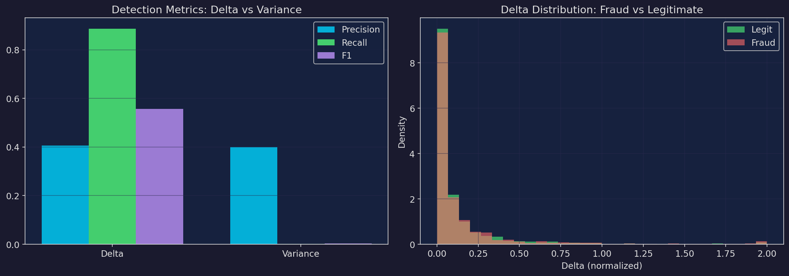
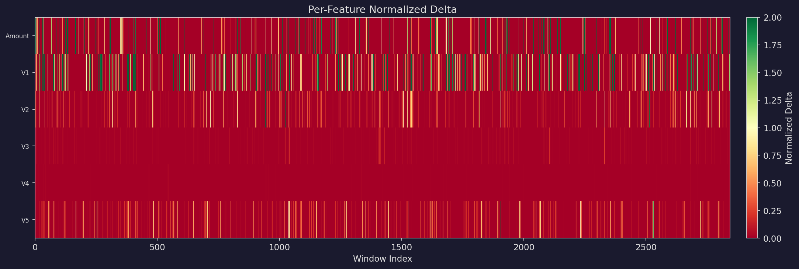

Key Results
Across 284,807 credit card transactions, the Δ coherence metric achieved an F1 score of 0.557 with 88.7% recall — catching the vast majority of fraud cases. Variance-based detection effectively failed, achieving only 0.2% recall and an F1 of 0.003. Mean Δ for fraud transactions was 0.139 vs 0.120 for legitimate — a clear separation signal.
Method Comparison
Δ Coherence
F1 Score: 0.557
Precision: 0.406
Recall: 88.7%
Mean Δ (fraud): 0.139
Mean Δ (legit): 0.120
Variance
F1 Score: 0.003
Precision: 0.400
Recall: 0.2%
Z-score threshold: 2.5
Status: Near-zero detection
Experiment Plots
Fraud Detection Overview

Precision–Recall Analysis

Feature Importance

Dataset
Credit Card Fraud Detection — European cardholders, September 2013. 284,807 transactions over two days, of which 492 (0.17%) are fraud. Features V1–V28 are PCA components (original features withheld for confidentiality), plus Time and Amount. Extreme class imbalance makes this a challenging benchmark for anomaly detection.
Configuration — Baseline: first 5,000 transactions. Window: 500 transactions, step 100. Δ threshold: 0.3. Variance z-score: 2.5. Features: Amount, V1, V2, V3, V4, V5.
Navigation